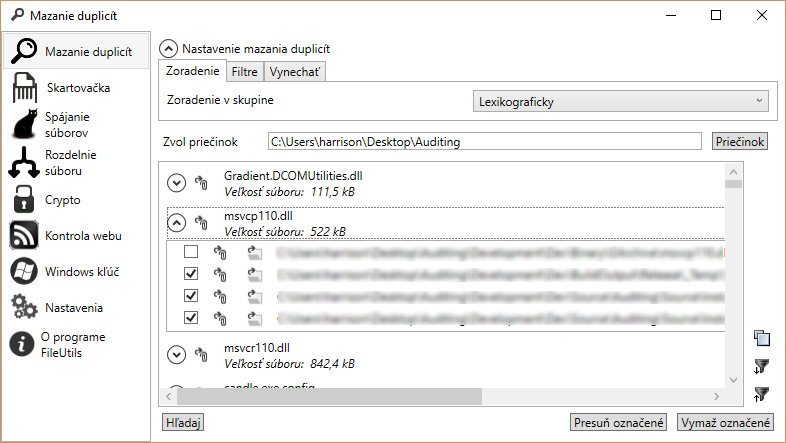
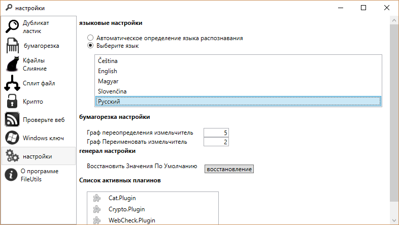
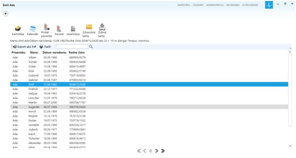
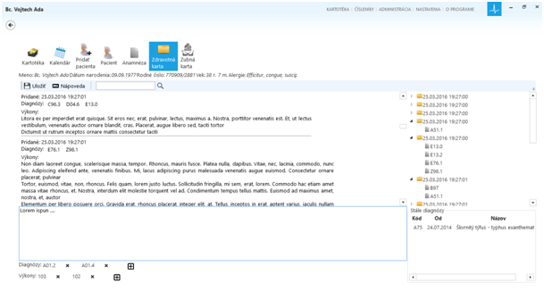

FileUtils je jednoduchá aplikácia, ktorej hlavnou funkcionalitou je hľadanie duplicitných súborov na disku podľa ich obsahu. Je vhodná pri veľkom množstve PDF-iek alebo fotiek na disku. Medzi ďalšie funkcie a vlastnosti patrí:
Zaujímavosťou tohto programu je spôsob hľadania duplicitných súborov, využíva sa na to HashSet objektov reprezentujúcich súbor. Tieto objekty si uchovávajú cestu k súboru a jeho veľkosť. Veľkosť súboru sa používa v metóde GetHashCode , metóda Equals najskôr porovná veľkosti súborov, ak sa zhodujú prečíta ich a vypočíta ich MD5 hashe, ktoré následne porovná. Vďaka tomu je hľadanie duplicitných súborov rýchle (na bežnom notebooku cca 1GB priemerne 300-500KB súborov, prehľadá za 30 sekúnd) a pamäťovo nenáročné.
Použité technológie
C# 4.0, WPF, lokalizácia pomocou T4 generátora resx súborov a vlastný WPF MarkupExtension pre dynamické načítavanie lokalizácie.


Medicínsky informačný systém.
Kompletná dokumentáciu s popisom nájdete tu - UnitologyIs


PerDia2012 je jednoduchá webová aplikácia, ktorá ma slúžiť ako denník a organizátor pre poznámky a pripomienky s možnosťou fulltextového vyhľadávania, anotácií záznamov v denníku, súkromnou časovou osou a iných.
Ide o single page aplikáciu postavenú na OWIN-e (server Nowin), Web Api, SimpleInjector, MS SQL. Na klientskej strane TypeScript prekladaný do ES6, knockout.js, Director.js a Bootstrap.
Šlo mi o to postaviť veľmi ľahkú a rýchlu aplikáciu, pomocou technológií používaných v SPA aplikáciách, a triku používanému v CQRS architektúre – tam, kde by dopyt do databázy používal JOIN sa nahradí databázovým pohľadom, použitie interného event publisher-a pre asynchrónnu aktualizáciu nepriamo súvisiacich dát (napríklad tabuliek pre používaných pre fulltext vyhľadávanie).
Použité technológie
C# 4.6, Owin, ASP.NET Web Api, SimpleInjector, Data reader a MS SQL 2014 (stored procedúry, Fulltext index, CTE, pôvodne aj SQL Service Brooker), TypeScript, knockout.js, Director.js a Bootstrap.
Pre unit testovanie: knižnice Sould, a Moq.
MapperPerfomace je jednoduchý projekt pre porovnanie výkonnosti mapovania databázového rezultu na aplikačné POCO objekty. Porovnávam ručné mapovanie pomocou SqlDarareaderu, mikro ORM Dapper, Entity Framework (manuálne mapovanie), Entity Framework s projekciou pomocou Autommaperu a iné (Tiny Mapper, Value injector, ...).
Odkaz na zdrojové kódy MapperPerformace.